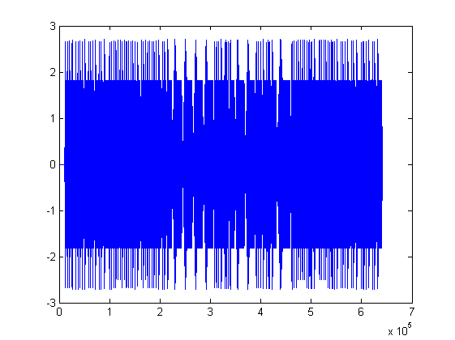
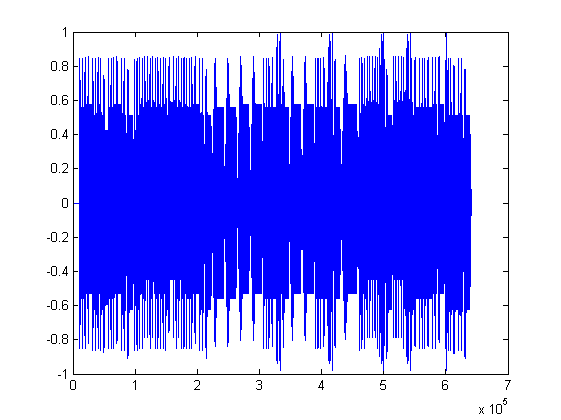

%%deişkenine 2. sütün b değişkenine vr 3. sutün c değişkenine atandı.oktav %%değeriyle oynayabilmek adına bir değişken tanımladı ve değişkene 0 değeri %%atandı. örnekleme sayısı,durma sürei ve geikme süresi değişkeni %%tanımlandı ve atamaları yapıldı. [nota,b,c]=textread('Notalar.txt','%s %s %s'); %Notalar.txt dosyasi okunarak her sutun bir değere atandi oktavdegeri=1; %oktav degeri degistirilebilir fs=11000;%örnekleme sayısı değişkene atandı ds=round(fs/100); %durma süresi hesaplandı go=round(fs/10); %gecikme süresi hesaplandı
%%örnekleme süresi kadar sıfırdan olusan bir dizi oluşturuldu.notalar %%matrisi boyutlarında sıfırdan olusan bir dizi oluşturuldu.durma süresi %%boyutunda sıfırdan olusan bir dizi oluşturuldu.Dosyadan cell olarak okunan %%değişkenler double değere dönüştürüldü ve oktav değişkenine atandı. notalar=zeros(1,fs); %örnekleme süresi kadar sıfırdan olusan bir dizi oluşturuldu a=zeros(1,length(notalar)); %notalar matrisi boyutlarında sıfırdan olusan bir dizi oluşturuldu durak=zeros(1,ds); %durma süresi boyutunda sıfırdan olusan bir dizi oluşturuldu oktav=str2num(cell2mat(b)); %dosyadan cell olarak okunan değişkenler double değere dönüştürüldü.
for i=1:(length(nota)) %nota dizisi boyu kadar döngü olşturuldu vurus((i),1)=str2num(cell2mat(c(i,1))); %dosyadan cell olarak okunan değişkenler double değere dönüştürüldü. frekans((i),1)=frek(nota((i),1),oktav((i),1),oktavdegeri); %daha önceden oluşturulmuş frek fonsiyonu çağırıldı [x,t]=note(frekans((i),1),vurus((i),1)); %daha önceden olışturulmuş note fonksiyonu çağırıldı. notalar=[notalar durak x]; %note fonsiyonunun döndürdüğü sinyal değeri aralarına daha önce oluşturulmu durak dizisi de yerleştirilerek birleştirildi end %for döngüsü bitirildi plot(notalar)
notalarecho=zeros(1,(length(notalar))); %notalar matrisi boyutlarında sıfırdan olusan bir dizi oluşturuldu for i=1:(length(notalar)) %notalar dizisi boyu kadar döngü olşturuldu f=(go+i); %echo oluşturmak için gerekli olan gecikme süresi döngüye sokuldu if f<(length(notalar)) %gecikme süresi notalar matrisinin boyutunu geçmesin diye şart sağlandı notalarecho(i)=notalar(i)*0.3+notalar(f); %notalar matrisinin herbir değerinin %30'u alınıp geçikme süresi kadar kaydırılmıştır else notalarecho(i)=notalar(i)*0.3+0; %notalar echo end end plot(notalarecho)

normalizenotalarecho=zeros(1,(length(notalar)));%normalizasyon işlemi yapılabilmesi için değişken tanımlanmıştır normalizenotalarecho=notalarecho/max(abs(notalarecho));%sinyalin tepe değerleri 1'e normalize edilmiştir. sound(normalizenotalarecho) %sinyal çaldırılıyor. plot(normalizenotalarecho)